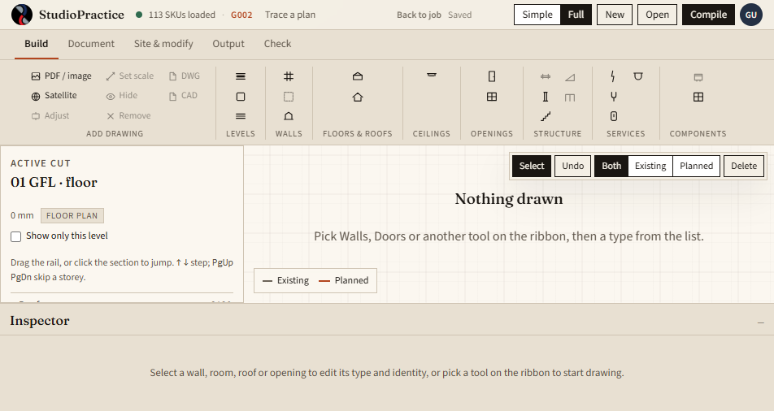
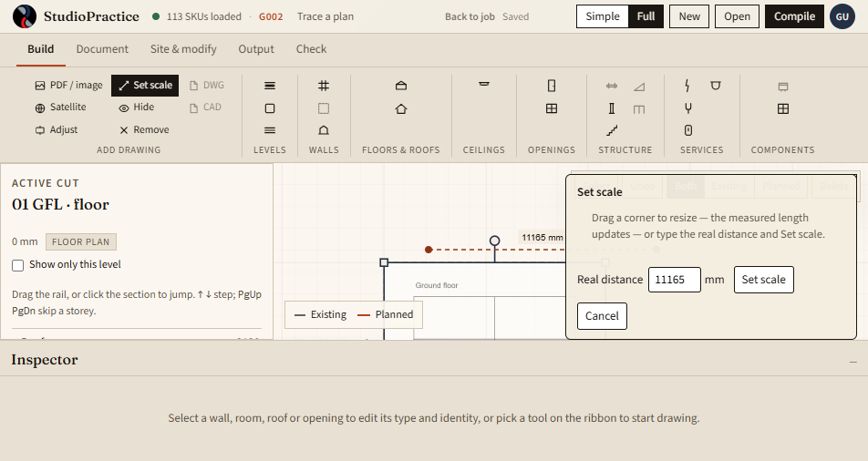
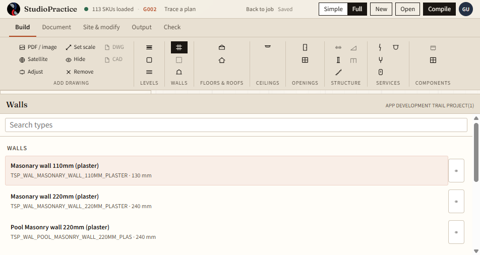
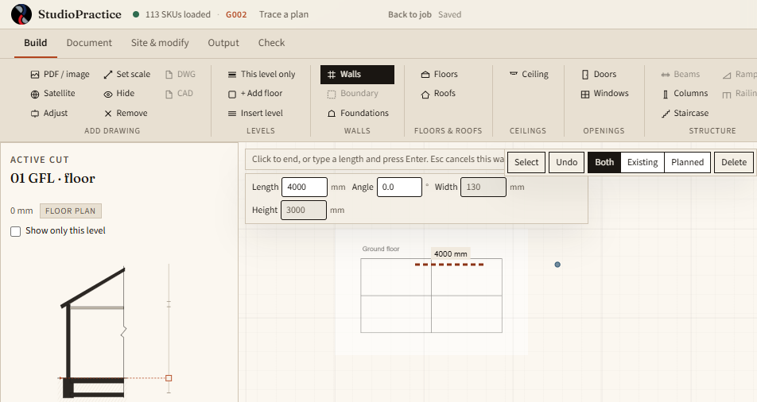
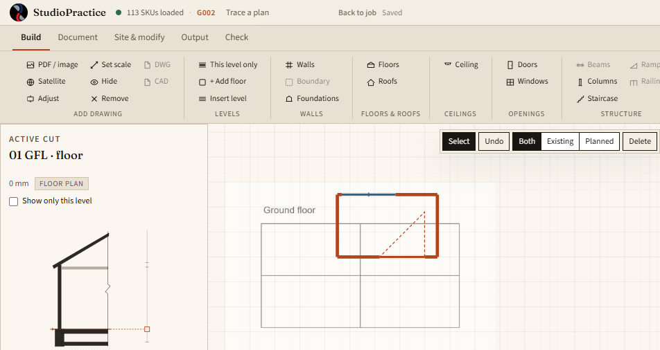
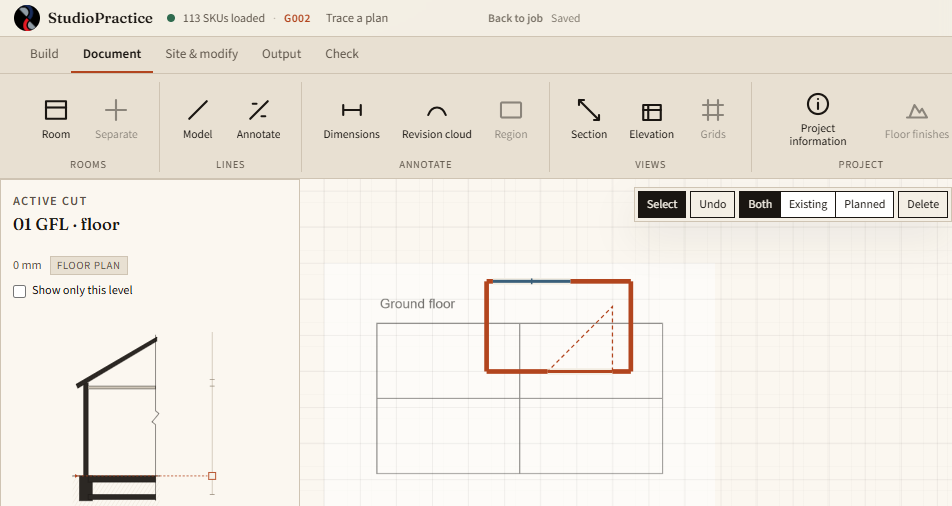

1. Switch to Full
Toolbar: Simple | Full sits at the right-hand end of the tab row. Full is the whole menu. The tabs are Build, Document, Site & modify, Output, and Check. A grey button is not built yet; hover it and the tooltip says why. The plan starts on Build. The left side is the active cut, which starts on 01 GFL · floor. An empty plan says Nothing drawn.

2. Load a PDF and set the scale
Press PDF / image and choose the file. The first page lands on the plan, and Set scale opens. Click two points a known distance apart. The length it shows is a guess from the current scale. Type the real distance in millimetres and press Set scale. Drag a corner if you would rather resize the sheet by eye. Adjust, Hide, and Remove are in the same Add drawing group. DWG and CAD are still grey.

3. Pick Walls, then a type
Press Walls. The type list opens with a wall already chosen — masonry, 110 mm, with plaster. Pick another row for a different thickness. The hint over the plan reads: click to start a wall, click again to end, Esc to stop.

4. Draw the walls over the sheet
Click once where the wall starts, then move. Length and Angle follow the pointer. Type a length in millimetres and press Enter, or click the end. Width and Height belong to the type — thickness and storey height — and are the size of the wall, not the room. The next wall starts where this one ended. Click the first corner again to close the room. The line is copper because it is Planned.

5. A door and a window
Press Doors and click a wall. The swing is the dashed arc. Press Windows and click a wall. The opening breaks the wall line. Press Escape when you want to stop placing. Wait until the status line says Saved, then reload. The sheet, the walls, and the openings are still there. Undo is on the plan.

6. The rest of Full
Document is next: Room, model and annotation lines, Dimensions, a revision cloud, Section and Elevation, and Project information. Site & modify holds rotate, copy, and delete once something is selected. Output is the 3D view, the bill of quantities, and sheets. Check runs the compliance tests. Grey buttons stay on the ribbon so the ones still to come are visible.
